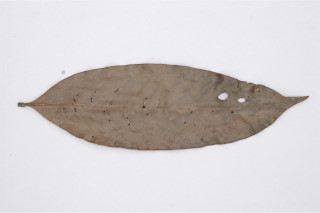
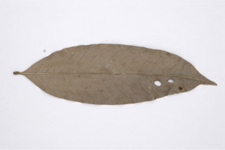
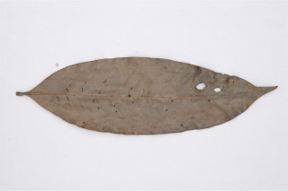
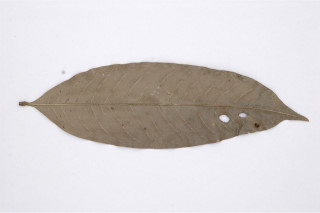

Images :
 



| Habit : | Medium sized evergreen trees , up to 18 tall. |
| Leaves : | Leaves simple , alternate ; stipules linear , pubescent , ca. 1 cm long, caducous ; petiole 0.2-0.4 cm long; lamina 7-12 x 2.5-3 cm, lanceolate , apex acuminate , base acute or slightly cuneate , glabrous , silky hairy along midrib beneath; secondary_nerves ca. 15 pairs, slender; tertiary_nerves closely reticulate . |
| Inflorescence / Flower : | Inflorescence axillary racemes , ca. 5 cm long, silky-villous ; flowers pink. |
| Fruit and Seed : | Drupe , 1-2 seeded . |